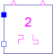

VoltageBridge2PulseControl of 2 pulse bridge rectifier |

|
Diagram
{kind=link}
Information
This information is part of the Modelica Standard Library maintained by the Modelica Association.
General information about controllers is summarized in Control.
This model provides two firing signal for Graetz bridge thyristor and half bridge rectifiers. The boolean
signal fire_p is assigned to the thyristors connected with the positive DC output pin.
The boolean
signal fire_n is assigned to the thyristors connected with the negative DC output pin.
Parameters (7)
| f |
Value: 50 Type: Frequency (Hz) Description: Frequency |
|---|---|
| useConstantFiringAngle |
Value: true Type: Boolean Description: Use constant firing angle instead of signal input |
| constantFiringAngle |
Value: 0 Type: Angle (rad) Description: Firing angle |
| firingAngleMax |
Value: Modelica.Constants.pi Type: Angle (rad) Description: Maximum firing angle |
| useFilter |
Value: true Type: Boolean Description: Enable use of filter |
| fCut |
Value: 2 * f Type: Frequency (Hz) Description: Cut off frequency of filter |
| vStart |
Value: 0 Type: Voltage (V) Description: Start voltage of filter output |
Connectors (5)
| firingAngle |
Type: RealInput Description: Firing angle |
|
|---|---|---|
| ac_p |
Type: PositivePin |
|
| ac_n |
Type: NegativePin |
|
| fire_p |
Type: BooleanOutput |
|
| fire_n |
Type: BooleanOutput |
Components (2)
| twoPulse |
Type: Signal2mPulse |
|
|---|---|---|
| voltageSensor |
Type: VoltageSensor |
Used in Examples (2)
|
Modelica.Electrical.PowerConverters.Examples.ACDC.RectifierBridge2Pulse Two pulse Graetz half controlled bridge with resistive load |
|
|
ThyristorBridge2Pulse_DC_Drive Modelica.Electrical.PowerConverters.Examples.ACDC.RectifierBridge2Pulse Two pulse Graetz thyristor bridge feeding a DC drive |
Used in Components (3)
|
Modelica.Electrical.PowerConverters.Examples.ACDC.ExampleTemplates Template of single pulse rectifier |
|
|
Modelica.Electrical.PowerConverters.Examples.ACDC.ExampleTemplates Template of two pulse Graetz thyristor bridge |
|
|
Modelica.Electrical.PowerConverters.Examples.ACDC.ExampleTemplates Template of two pulse thyristor rectifier with center tap |